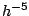
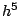

For PDE problems, Numerical Analysts would always wish to establish error estimates in `natural' norms for a given problem. In the context of iterative solution methods there is similarly the issue of the right norm for convergence: discrete norms are equivalent, but measuring a convergence tolerance in a norm in which half of the variables are scaled by  or  is definitely not the right thing to do in general!
In particular this issue arises when preconditioning with minimum residual methods because then monotonic residual reduction occurs in a norm based on the preconditioner. (For SPD problems and Conjugate Gradients it is well known that any SPD preconditioning does not affect the relevant norm).
In this talk we will discuss this issue in the context of models of incompressible flow -- Poisson, Stokes, Advection-Diffusion and Navier-Stokes problems -- and show how the optimal block preconditioners developed by Silvester and the author for the Stokes problem give convergence in the right norm; comments will also be made regarding Navier-Stokes preconditioning.
This is joint work with Howard Elman and David Silvester